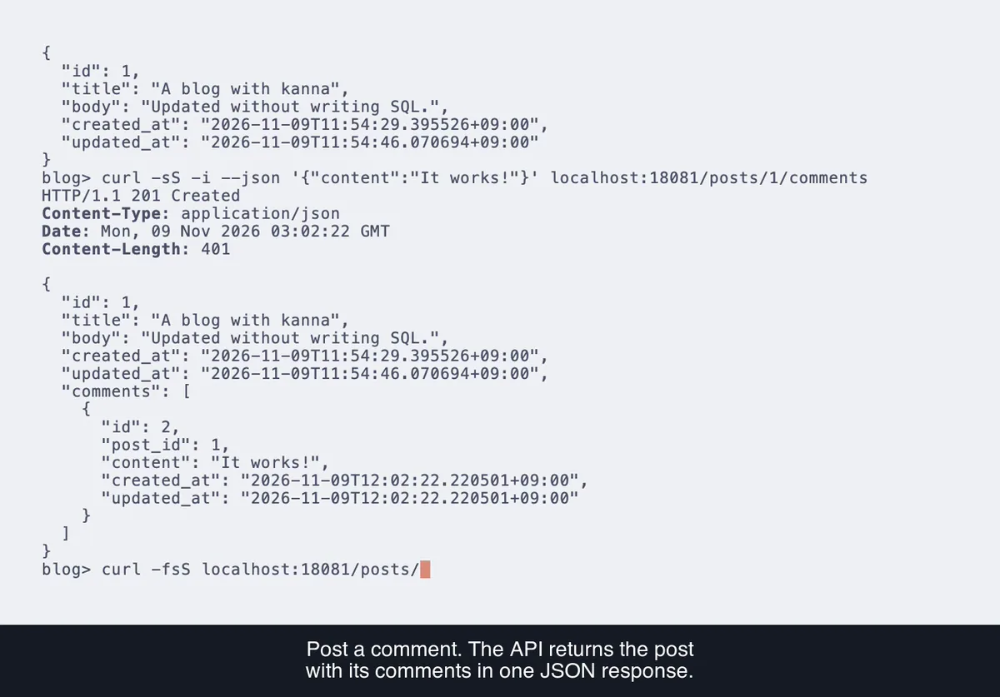

You write the declaration.
kanna writes the Go you would have.
Eight code generators for what every Go service repeats: validation, value types, the database, mapping, messages, settings, wiring, and test data. Declare what you need under the names the conventions expect; where they do not fit, write that part in Go or SQL. A mistake in a declaration is reported when the code is generated, with its file and line.
Build a blog API in Go in 15 minutes.
Start with models and interfaces. Build post CRUD, add comments, validate requests, and test against a real database.
Follow the tutorial
Each is a module of its own. Use one, or all eight together, as the showcase does, with kanna gen to run them in order.
user.goyou write
//go:generate go tool kanna-validator
//kanna:validate
type CreateUserRequest struct {
Name string `json:"name" validate:"required,max=50"`
Age int `json:"age" validate:"gte=18"`
}validator_gen.gokanna-validator writes
func (x CreateUserRequest) Validate() error {
var errs validator.Errors
if x.Name == "" {
errs.Add("name", validator.Blank())
} else {
if utf8.RuneCountInString(x.Name) > 50 {
errs.Add("name", validator.TooLong(50))
}
}
if x.Age < 18 {
errs.Add("age", validator.GreaterThanOrEqualTo(18))
}
return errs.Err()
}kanna-validator writes a Validate method from the validate tags of a struct, and reports what breaks as error codes, keyed by the fields' JSON names.
The tags are written as for go-playground/validator. They are read once, by go generate, instead of by reflection on every call.
go get -tool github.com/go-kanna/validator/cmd/kanna-validator
model.goyou write
//go:generate go tool kanna-value
//kanna:value
type Email struct{ s string }
func (Email) validate(s string) error { return rule.Email(s) }value_gen.gokanna-value writes
func NewEmail(v string) (Email, error) {
if err := (Email{}).validate(v); err != nil {
return Email{}, err
}
return Email{s: v}, nil
}
func (x *Email) UnmarshalJSON(data []byte) error {
if string(data) == "null" {
return nil
}
var v string
if err := json.Unmarshal(data, &v); err != nil {
return err
}
y, err := NewEmail(v)
if err != nil {
return err
}
*x = y
return nil
}
// MustEmail, String, IsZero, and MarshalJSON, Value, and Scan, which check too.kanna-value turns a struct holding one value and a validate method into a value type: constructors, an accessor, and JSON and SQL methods that hold every value to the rule, wherever it comes from. A string type with constants, marked //kanna:enum, becomes an enum that reads in only those.
The constructor and the four marshaling methods you would otherwise write for every value object, with the rule in one place, and the check of an enum's constants that every layer would repeat.
go get -tool github.com/go-kanna/value/cmd/kanna-value
repository/order.goyou write
//go:generate go tool kanna-orm -destination ../postgres
//kanna:repository
type OrderRepository interface {
List(ctx context.Context, s ...scopes.Order) ([]model.Order, error)
Insert(ctx context.Context, o model.Order) (model.Order, error)
}postgres/repository_gen.gokanna-orm writes
func (r OrderRepository) Insert(ctx context.Context, o model.Order) (model.Order, error) {
const q = `INSERT INTO orders (id, customer_id, status, placed_at, note)
VALUES ($1, $2, $3, $4, $5)
RETURNING id, customer_id, status, placed_at, note`
var row model.Order
err := r.db.QueryRow(ctx, q, o.ID, o.CustomerID, o.Status, o.PlacedAt, o.Memo).
Scan(&row.ID, &row.CustomerID, &row.Status, &row.PlacedAt, &row.Memo)
if err != nil {
return model.Order{}, fmt.Errorf("insert into orders: %w", err)
}
return row, nil
}scopes/scopes_gen.gokanna-orm writes
// StatusNe narrows to the rows whose status is not v.
func (s Order) StatusNe(v model.OrderStatus) Order {
return Order{ormScope(ormRuntime(s.q).Where(`status <> `, v))}
}
// ...a method for each column and relation, and Limit, After, and Cursor.handler.goyou call
orders, err := repo.List(ctx, scopes.Orders().
StatusNe(model.OrderCanceled).
PlacedAtDesc().
Limit(20))kanna-orm writes the implementation of your repository interfaces, with the SQL in it as literals, and a scope type for each table whose methods narrow, order, page, and load relations.
Scopes that chain as gorm's do, queries checked against your schema as sqlc checks them, and no reflection in what it writes. On PostgreSQL through pgx or database/sql, and MySQL 8.4 or later.
go get -tool github.com/go-kanna/orm/cmd/kanna-orm
mapper.goyou write
//go:generate go tool kanna-mapper
//kanna:mapper
type _ interface {
EmployeeToEmployeev1(model.Employee) *employeev1.Employee
EmployeeToModel(*employeev1.Employee) (model.Employee, error)
}
//kanna:converter
var _ = []any{
uuid.UUID.String,
uuid.Parse,
timestamppb.New,
(*timestamppb.Timestamp).AsTime,
}mapper_gen.gokanna-mapper writes
func EmployeeToModel(src *employeev1.Employee) (model.Employee, error) {
if src == nil {
src = new(employeev1.Employee)
}
v, err := uuid.Parse(src.GetId())
if err != nil {
return model.Employee{}, fmt.Errorf("map model.Employee.ID: %w", err)
}
return model.Employee{
ID: v,
FullName: src.GetName(),
HiredAt: src.GetHiredAt().AsTime(),
Address: addressToModel(src.GetAddress()),
}, nil
}
// EmployeeToEmployeev1, and addressToModel and addressToEmployeev1, which they call.kanna-mapper writes the functions between your domain types and the wire types you do not control. You declare the signatures; it writes the bodies, field by field, and handles protobuf oneofs, enums, and sum types.
Declared much as with goverter. What Go cannot convert by itself, you list as the functions that do, uuid.Parse and timestamppb.New as they are.
go get -tool github.com/go-kanna/mapper/cmd/kanna-mapper
locales/you write
# en.yaml
hello: "Hello, {name}!"
items_count:
plural:
one: "You have {count} item."
other: "You have {count} items."
# ja.yaml
hello: "こんにちは、{name}さん！"
items_count:
plural:
other: "アイテムが{count}個あります。"messages/i18n_gen.gokanna-i18n writes
// Hello returns the message "hello":
//
// Hello, {name}!
func Hello(name string) i18n.Message {
return i18n.Message{Key: "hello", Args: []i18n.Arg{
{Name: "name", Value: name},
}}
}
// ItemsCount returns the message "items_count", in the form count selects:
//
// one: You have {count} item.
// other: You have {count} items.
func ItemsCount(count int) i18n.Message {
return i18n.Message{Key: "items_count", Args: []i18n.Arg{
{Name: "count", Value: count},
}}
}handler.goyou call
loc := messages.Localizer(r.Header.Get("Accept-Language"))
// You have 1 item. or アイテムが1個あります。
fmt.Fprintln(w, loc.Localize(messages.ItemsCount(1)))kanna-i18n compiles a directory of locale files into a typed constructor for every message, the translations compiled in: CLDR plurals, locale-formatted numbers, and a Localizer that takes an Accept-Language value.
Locale files as with go-i18n, but a message is a function the compiler checks, not an ID looked up at run time.
go get -tool github.com/go-kanna/i18n/cmd/kanna-i18n
database.goyou write
//go:generate go tool kanna-config
//kanna:config
type Database struct {
WriterURL string `validate:"required"`
PoolMaxConns int32 `default:"10" validate:"gte=1"`
DialTimeout time.Duration `default:"5s"`
}config_gen.gokanna-config writes
func LoadDatabase(src source.Source) (Database, error) {
var (
x Database
errs validator.Errors
)
// ...WriterURL, the same way.
x.PoolMaxConns = 10
namePoolMaxConns := "DATABASE_POOL_MAX_CONNS"
if v, ok, err := src.Lookup(source.Key{Env: "DATABASE_POOL_MAX_CONNS", File: []string{"database", "pool_max_conns"}, Flag: "database-pool-max-conns"}); err != nil {
errs.Add(v.Name, err)
} else if ok {
namePoolMaxConns = v.Name
if n, err := strconv.ParseInt(v.Text, 10, 32); err != nil {
errs.Add(namePoolMaxConns, validator.FailWith("invalid", map[string]any{"type": "int32"}))
} else {
x.PoolMaxConns = int32(n)
}
}
// ...DialTimeout, the same way, with time.ParseDuration.
if len(errs) > 0 {
return Database{}, errs
}
if x.WriterURL == "" {
errs.Add(nameWriterURL, validator.Blank())
}
if x.PoolMaxConns < 1 {
errs.Add(namePoolMaxConns, validator.GreaterThanOrEqualTo[int32](1))
}
if len(errs) > 0 {
return Database{}, errs
}
return x, nil
}
// DefineDatabaseFlags, which defines the flags it reads.main.goyou call
fs := flag.NewFlagSet("api", flag.ExitOnError)
config.DefineDatabaseFlags(fs)
_ = fs.Parse(os.Args[1:])
src, err := source.Open(source.Sources{
Flags: fs,
Files: []source.File{{Path: "config/production.yaml", Decode: yaml.Decode}},
})
// ...
db, err := config.LoadDatabase(src)
// With DATABASE_WRITER_URL unset, and pool_max_conns: 0 in the file:
// validator: DATABASE_WRITER_URL: blank; database.pool_max_conns: greater_than_or_equal_to (count=1)kanna-config writes, for a struct of settings, the function that reads it from flags, the environment, and JSON, YAML, or TOML files, and checks it by its validate tags. Each setting is named after the struct and the field, and an error names it as it is set: the variable, the key in the file, or the flag.
The environment much as caarlos0/env reads it, and flags and files besides, by code generated once instead of by reflection at every start. A variable ending in _FILE names a file holding the value, as Kubernetes mounts a secret.
go get -tool github.com/go-kanna/config/cmd/kanna-config
server.goyou write
//go:generate go tool kanna-di
//kanna:container
type server struct {
_ user.Repository `di:"with=postgres.NewUserRepository"`
users *handler.User
}
func openDB(cfg config.Config) (*sql.DB, func(), error)
func newLogger() *slog.Loggerdi_gen.gokanna-di writes
func newServer() (*server, func(), error) {
cfg, err := config.Load()
if err != nil {
return nil, nil, err
}
db, cleanup, err := openDB(cfg)
if err != nil {
return nil, nil, err
}
repo := postgres.NewUserRepository(db)
log := newLogger()
registerUser := usecase.NewRegisterUser(repo, log)
getUser := usecase.NewGetUser(repo)
users := handler.NewUser(registerUser, getUser)
return &server{
users: users,
}, cleanup, nil
}kanna-di writes the constructor of a container struct from the functions next to your types, in the order they need each other. What a provider opens, it closes, through the one cleanup the constructor returns.
Generated before compiling, as with Wire, but with no provider sets to keep: a dependency comes from the function next to its type, and an interface is bound with one tag.
go get -tool github.com/go-kanna/di/cmd/kanna-di
model.goyou write
//go:generate go tool kanna-fixture
type User struct {
ID int64
Name string `fake:"{firstname} {lastname}"`
Email string `validate:"required,email"`
Age int `validate:"gte=18,lte=130"`
Role Role
CreatedAt time.Time
}fixture/fixture_gen.gokanna-fixture writes
func User(setters ...func(*model.User)) model.User {
n := seqUser.Add(1)
f := gofakeit.NewFaker(rand.NewPCG(uint64(n), 0x5f2c8e0a9d4b7136), false)
x := model.User{
ID: n,
Name: mustGenerate(f, "{firstname} {lastname}"),
Email: fmt.Sprintf("email-%d@example.com", n),
Age: int(18 + (n-1)%113),
Role: model.RoleAdmin,
CreatedAt: time.Date(2000, time.January, 1, 0, 0, int(n), 0, time.UTC),
}
for _, set := range setters {
set(&x)
}
return x
}user_test.goyou call
u := fixture.User(func(u *model.User) { u.Age = 17 })
// Validating u reports age, and nothing else.kanna-fixture writes a constructor for every struct of a package, every field filled: numbered so that no two collide, within the rules its validate tags declare, or from a gofakeit template where you ask for one.
The newTestUser helpers every test package grows, written for every struct and kept in step with it. A fixture is valid as made, so a test of one rule changes one field.
go get -tool github.com/go-kanna/fixture/cmd/kanna-fixture
What each one writes
Plain Go declarations, in files headed DO NOT EDIT. Here is what the example in each repository gets, listed as go doc lists it.
kanna-ormscopes/scopes_gen.go, postgres/repository_gen.go
type Order struct{ q scope.Of[model.Order] }
func Orders() Order
func (s Order) StatusEq(v model.OrderStatus) Order
func (s Order) PlacedAtDesc() Order
func (s Order) WithLines(sub ...OrderLine) Order
func (s Order) After(row model.Order) Order
func (s Order) AfterCursor(cursor string) (Order, error)
// ...80 methods on Order in all, for its columns, its relations, and paging
type Order struct{ db kDatabase }
func NewOrder(db DBTX, opts ...option.Option) Order
func (r Order) Get(ctx context.Context, id model.OrderID, s ...scopes.Order) (model.Order, error)
func (r Order) List(ctx context.Context, s ...scopes.Order) ([]model.Order, error)
func (r Order) Insert(ctx context.Context, o model.Order) (model.Order, error)
// ...one for each method of the interfacekanna-validatorvalidator_gen.go
func (x CreateUserRequest) Validate() error
func (x Address) Validate() errorkanna-valuevalue_gen.go
func NewEmail(v string) (Email, error)
func MustEmail(v string) Email
func (x Email) String() string
func (x Email) IsZero() bool
func (x Email) MarshalJSON() ([]byte, error)
func (x *Email) UnmarshalJSON(data []byte) error
func (x Email) Value() (driver.Value, error)
func (x *Email) Scan(src any) error
// and for the enum Priority
func NewPriority(v string) (Priority, error)
func PriorityValues() []Priority
func (x Priority) String() string
func (x *Priority) UnmarshalText(text []byte) error
func (x *Priority) Scan(src any) error
func (x Priority) Validate() errorkanna-mappermapper_gen.go
func EmployeeToEmployeev1(emp model.Employee) *employeev1.Employee
func EmployeeToModel(emp *employeev1.Employee) (model.Employee, error)
func addressToEmployeev1(src model.Address) *employeev1.Address
func addressToModel(src *employeev1.Address) model.Address
// ...and the same two for Contactkanna-i18nmessages/i18n_gen.go
func Hello(name string) i18n.Message
func ItemsCount(count int) i18n.Message
func TotalPrice(price float64) i18n.Message
func UserDeleted(name string) i18n.Message
func Localizer(langs ...string) i18n.Localizerkanna-configconfig_gen.go
func DefineDatabaseFlags(fs *flag.FlagSet)
func DefineServerFlags(fs *flag.FlagSet)
func LoadDatabase(src source.Source) (Database, error)
func LoadServer(src source.Source) (Server, error)kanna-didi_gen.go
func newServer(out io.Writer) (*server, func(), error)
func mustNewServer(out io.Writer) (*server, func())kanna-fixturefixture/fixture_gen.go
func Article(setters ...func(*blog.Article)) blog.Article
func Author(setters ...func(*blog.Author)) blog.Author
func Invite(setters ...func(*blog.Invite)) blog.Invite
func SignUp(setters ...func(*blog.SignUp)) blog.SignUpLearn one, and you know all eight
Every tool is installed, run, and checked in CI the same way. Nothing is set up but the line that runs it, except that kanna-orm reads your schema from a snapshot, which you take once from your migrated database with kanna-orm describe, and again after each migration.
-
Install it into your module
go get -tool github.com/go-kanna/validator/cmd/kanna-validatorThe version is in your
go.mod, so everyone on the project runs the same one. -
Mark what it reads
//go:generate go tool kanna-validator //kanna:validate type CreateUserRequest struct {A comment next to the struct, the interface, or the directory it is about. Without kanna, your code reads the same.
-
Generate
go generate ./...Each tool writes its
_gen.gofiles and prints nothing when it succeeds. A mistake stops it instead, at the file and line, with what you probably meant. -
Check in CI
KANNA_CHECK=1 go generate ./...Fails when a committed file is not what its generator would write now, and writes nothing.
All eight, in the order they need
Tools read what other tools write, so with more than one, which runs first matters. kanna gen works that out from what each one reads and writes, and runs every //go:generate go tool kanna-* line once. There is nothing to configure, and no list of packages to keep.
The lines in your code, as go generate finds themyou write
config/generate.go:3 //go:generate go tool kanna-config
di/generate.go:3 //go:generate go tool kanna-di
handler/handler.go:17 //go:generate go tool kanna-di
mapper/todo.go:11 //go:generate go tool kanna-mapper
messages/generate.go:3 //go:generate go tool kanna-i18n -destination .
model/todo.go:15 //go:generate go tool kanna-value
model/todo.go:42 //go:generate go tool kanna-fixture
repository/todo.go:13 //go:generate go tool kanna-orm -destination ../postgres
scopes/scopes.go:3 //go:generate go tool kanna-orm
usecase/generate.go:3 //go:generate go tool kanna-validator
usecase/generate.go:4 //go:generate go tool kanna-digo tool kanna genkanna writes
config/generate.go:3 kanna-config wrote config/config_gen.go
di/generate.go:3 kanna-di wrote di/di_gen.go
model/todo.go:15 kanna-value wrote model/value_gen.go
model/todo.go:42 kanna-fixture wrote model/fixture/fixture_gen.go
scopes/scopes.go:3 kanna-orm wrote scopes/scopes_gen.go
repository/todo.go:13 kanna-orm wrote postgres/repository_gen.go
messages/generate.go:3 kanna-i18n wrote messages/i18n_gen.go
usecase/generate.go:3 kanna-validator wrote usecase/validator_gen.go
usecase/generate.go:4 kanna-di wrote usecase/di_gen.go
mapper/todo.go:11 kanna-mapper wrote mapper/mapper_gen.go
handler/handler.go:17 kanna-di wrote handler/di_gen.go
11 tasks, 11 files changed-
See why
go tool kanna gen -planPrints what would run and why it comes where it does, such as
code in usecase calls what kanna-validator generates, and runs nothing. -
Check in CI
go tool kanna gen -check go tool kanna vetThe first fails when a committed file is not what would be generated, and writes nothing. The second runs the vet of each tool that has one, on the code calling what it writes.
-
Install it
go get -tool github.com/go-kanna/kannaIt runs the lines already in your code, so every tool goes on working under
go generatewithout it. Read the README
All eight in one module
Nine lines install the eight tools and kanna gen into your module. If you use kanna-validator, kanna-config, or kanna-value, you need Go 1.27 or later.
go get -tool github.com/go-kanna/validator/cmd/kanna-validator
go get -tool github.com/go-kanna/value/cmd/kanna-value
go get -tool github.com/go-kanna/orm/cmd/kanna-orm
go get -tool github.com/go-kanna/mapper/cmd/kanna-mapper
go get -tool github.com/go-kanna/i18n/cmd/kanna-i18n
go get -tool github.com/go-kanna/config/cmd/kanna-config
go get -tool github.com/go-kanna/di/cmd/kanna-di
go get -tool github.com/go-kanna/fixture/cmd/kanna-fixture
go get -tool github.com/go-kanna/kannaapp/├── config/│ ├── database.go //kanna:config│ └── config_gen.go 1 kanna-config├── di/│ ├── infra.go //kanna:container│ └── di_gen.go 2 kanna-di├── model/│ ├── order.go //kanna:value, //kanna:enum│ ├── value_gen.go 3 kanna-value│ └── fixture/fixture_gen.go 4 kanna-fixture├── scopes/│ ├── scopes.go //kanna:scopes│ └── scopes_gen.go 5 kanna-orm├── repository/│ └── order.go //kanna:repository├── postgres/│ └── repository_gen.go 6 kanna-orm├── messages/│ ├── locales/en.yaml│ └── i18n_gen.go 7 kanna-i18n├── usecase/│ ├── place_order.go //kanna:validate, //kanna:container│ ├── validator_gen.go 8 kanna-validator│ └── di_gen.go 9 kanna-di├── mapper/│ ├── order.go //kanna:mapper│ └── mapper_gen.go 10 kanna-mapper├── handler/│ ├── order.go //kanna:container│ └── di_gen.go 11 kanna-di└── kanna-orm.snapshot.json kanna-orm describe-
Where each goes
The files you write carry the marks the tools read, and each file a tool writes is named for it. The numbers are the order kanna gen runs them in, worked out from what each package imports;
go tool kanna gen -planprints it for your module. The showcase has the same packages, underinternal/. -
Take the snapshot
go tool kanna-orm describe -database-url "$DATABASE_URL" ./...kanna-orm reads your schema from
kanna-orm.snapshot.json, so take one from your migrated database once, and again after each migration. Commit it with the migration. -
Generate
go tool kanna genRuns the eleven lines, each once, in the order of the numbers. Read the README
Follow the conventions, and a declaration is all it takes
The implementation is generated as plain Go you can read, and a mistake is told as early as it can be.
-
Conventions for the routine, your own code for the rest
The conventions write the boilerplate; where they do not fit, you write Go or SQL instead of adding a setting.
-
What is generated is plain Go
It reads without knowing kanna, and you treat it as code you wrote by hand.
-
What you know tells you what to expect
Knowing Go and SQL, you can tell what a declaration means and how the generated code behaves.
-
Mistakes early, and clearly
A mistake that can be caught statically is told before anything runs; one only run time can judge is told when it runs.
Three Go proverbs every generator keeps
The tools do different jobs, and what they write keeps to the same three proverbs.
-
Clear is better than clever.
What a generator writes is the code you would have written:
ifstatements, function calls, and SQL in string literals. Step through it in a debugger, and see every change of a rule in a diff. -
Reflection is never clear.
Struct tags, directives, and locale files are read once, by go generate, not by reflection on every call. What runs is what the generated file shows.
-
A little copying is better than a little dependency.
The generated code is yours, in your module. kanna-di and kanna-mapper import nothing at run time, and kanna-fixture only gofakeit, for the fields given a template. A generator that needs a runtime ships a small one in its own module, so the two never drift apart; the code kanna-config writes calls the runtime of kanna-validator as well.
From Rob Pike's Go Proverbs.
Eight tools, one service
go-kanna/showcase is a to-do service, gRPC over PostgreSQL, with every tool in its place. What the generators write is committed, so each file can be read beside what it came from: here, on wood.
showcase/├── config/│ ├── api_config.go│ ├── database_config.go│ └── config_gen.go kanna-config├── internal/│ ├── di/│ │ ├── config_di.go│ │ ├── infra_di.go│ │ └── di_gen.go kanna-di│ ├── feature/todo/│ │ ├── model/│ │ │ ├── todo_model.go│ │ │ ├── value_gen.go kanna-value│ │ │ ├── fixture/priority.go│ │ │ └── fixture/fixture_gen.go kanna-fixture│ │ ├── projection/│ │ │ └── todo_projection.go│ │ ├── scopes/│ │ │ ├── scopes.go│ │ │ └── scopes_gen.go kanna-orm│ │ ├── repository/│ │ │ └── *_repository.go│ │ ├── postgres/│ │ │ ├── errors.go│ │ │ ├── todo_queries.sql│ │ │ └── repository_gen.go kanna-orm│ │ ├── usecase/│ │ │ ├── *_use_case.go│ │ │ ├── di_gen.go kanna-di│ │ │ └── validator_gen.go kanna-validator│ │ ├── mapper/│ │ │ ├── todo_mapper.go│ │ │ └── mapper_gen.go kanna-mapper│ │ └── handler/│ │ ├── todo_handler.go│ │ └── di_gen.go kanna-di│ └── messages/│ ├── locales/│ └── i18n_gen.go kanna-i18n└── kanna-orm.snapshot.json- kanna-dibuilds the infrastructure once, and the handler from it, choosing the repositories its use cases are given
- kanna-validatorchecks what the use cases are given
- kanna-configreads the server's settings from flags and the environment, as
API_PORTandDATABASE_WRITER_URL, and checks them; kanna-di builds them through theLoadAPIandLoadDatabaseit writes - kanna-valueholds a to-do's completion time between 2000 and 2100, wherever it goes, and its priority to the three it declares
- kanna-ormimplements the repositories the use cases depend on, and the scopes they read through. A list counts the comments of each to-do in a query written by hand, reads its three latest with
WithComments, and goes on page by page with a cursor - kanna-mappermaps a to-do to its protobuf message, the input of
PutTodoback from one, priorities by name, and the filter ofListTodo, a oneof, into a sum type - kanna-fixturemakes the to-dos and comments the tests start from, normal in priority by
fixture.Priority, written by hand - kanna-i18ncompiles the service's messages, and the texts of validation errors, in English and Japanese
- kanna genruns all of them behind
make genand their vets behindmake vet, and checks what is committed in CI
Every tool
Each is a module of its own: install the ones you need. Each page here is the tool's README.
-
Generates a
Validatemethod from thevalidatetags of a struct, and reports what breaks as error codes, keyed by the fields' JSON names. Decodes a request and reports everything wrong with it at once.go get -tool github.com/go-kanna/validator/cmd/kanna-validatorv0.0.7 Go 1.27
-
Turns a struct holding one value and a
validatemethod into a value type, with constructors, an accessor, and JSON and SQL methods that hold every value to the rule wherever it comes from. A type of your own, so it takes your methods; theemail,url, anduuidtags of kanna-validator call the same rules. A string type with constants becomes an enum that reads in only those, from JSON, text, and a database, andkanna-value vetfinds a string constant your code makes one of its values that none of its constants holds.go get -tool github.com/go-kanna/value/cmd/kanna-valuev0.0.4 Go 1.26
-
Writes the implementation of your repository interfaces, with the SQL in it as literals, and a scope type for each table whose methods narrow, order, page, and load relations. It reads the schema from a snapshot of your migrated database, so a column or a type that does not match stops generation. PostgreSQL through pgx or database/sql, and MySQL 8.4 or later.
kanna-orm vetfinds the calls handing a repository a scope it fails on every time.go get -tool github.com/go-kanna/orm/cmd/kanna-ormv0.0.3 Go 1.26
-
Writes the functions between your domain types and the wire types you do not control. You declare the signatures; it writes the bodies, field by field, calling the conversions you list,
uuid.Parseandtimestamppb.Newas they are, and handles protobuf oneofs. An enum of kanna-value maps to a protobuf enum by the names of their constants, and a sum type of the domain to a oneof;//kanna:mapper strictfills only the fields named for it.go get -tool github.com/go-kanna/mapper/cmd/kanna-mapperv0.0.7 Go 1.26
-
Compiles a directory of locale files into a typed constructor for every message, with the translations themselves compiled in, so nothing is read or parsed at run time. CLDR plurals, locale-formatted numbers, and a
Localizerthat takes an Accept-Language value.kanna-i18n vetfinds the error codes your code reports that render as their key, or with a placeholder the params do not give.go get -tool github.com/go-kanna/i18n/cmd/kanna-i18nv0.0.7 Go 1.26
-
Writes, for a struct of settings, the function that reads it from flags, the environment, and JSON, YAML, or TOML files, and checks it by its
validatetags, with no reflection. Each setting is named after the struct and the field, asDATABASE_WRITER_URL,database.writer_url, and-database-writer-url, and an error names it as it is set. A variable ending in_FILEnames a file holding the value, and a default a rule such asgterejects stops generation.go get -tool github.com/go-kanna/config/cmd/kanna-configv0.0.1 Go 1.27
-
Writes the constructor of a container struct from the functions next to your types and next to the container: nothing registered, an interface bound to its implementation with one tag, cleanups returned as one, and nothing to import at run time.
go get -tool github.com/go-kanna/di/cmd/kanna-div0.0.5 Go 1.26
-
Writes a constructor for every struct of a package with every field filled: numbered so that no two collide, within the rules its
validatetags declare, or from a gofakeit template, which is checked while generating.go get -tool github.com/go-kanna/fixture/cmd/kanna-fixturev0.0.7 Go 1.26
-
Runs the generators of a module in the order they need, worked out from what each reads and writes. It adds no configuration: what it runs are the
//go:generatelines already there, and it can show why each comes where it does, or check them in CI.kanna vetruns the vets of those that have one.go get -tool github.com/go-kanna/kannav0.3.0 Go 1.26
Why a plane
A kanna (鉋) is the Japanese hand plane, pulled toward you across a board. A good one lifts a shaving thin enough to read through, and leaves a surface that needs nothing more.
That is the job we hold a generator to: take off exactly the code you would have written, thin enough to read, and leave the rest of your program alone. The shaving is the mark, and its wood is the color of everything a generator writes on this site.